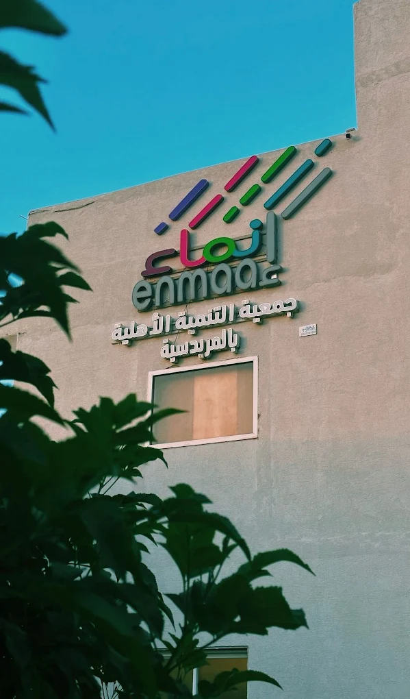
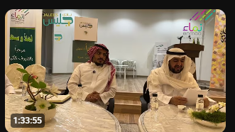
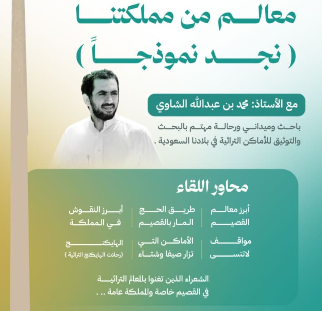

لأن القراءة تجمعنا
مساحة ثقافية تجمع محبي القراءة، وتفتح أبواب الحوار حول الكتب والأفكار والتاريخ، من خلال لقاءات واستضافات ثقافية في منطقة القصيم.

عن نادي جليس القرائي
نادي جليس القرائي مساحة تجمع المهتمين بالقراءة والثقافة والتاريخ في منطقة القصيم، وتهدف إلى تعزيز حضور القراءة في المجتمع، وخلق بيئة للحوار وتبادل المعرفة، والتعرف على تجارب القراء والكتّاب والمهتمين بالتاريخ من خلال اللقاءات والاستضافات الثقافية.
تعزيز ثقافة القراءة
نشر شغف القراءة وجعلها سلوكاً يومياً ممتعاً، ومساعدة القرّاء على تجاوز الفتور وتطوير مهارات النقد والتحليل.
أبرز ثمار تعزيز ثقافة القراءة:
- ✓ إنجاز تراكمي مستمر تجاوز 1,006,651 صفحة مقروءة.
- ✓ إنهاء قراءة أكثر من 5,232 كتاباً عبر تحديات أسبوعية متواصلة.
- ✓ التزام قرائي أسبوعي يجمع أعضاء النادي بنشاط وتفاعل دائم.
بناء مجتمع من القراء
إيجاد بيئة دافئة وآمنة للحوار، يتلاقى فيها عشاق الكتب من منطقة القصيم لتبادل الآراء والتجارب وإثراء المعارف المشتركة.

لقطة من مجلس الحوارملامح مجتمع القرّاء ولقاءاتهم:
- ✓ لقاءات دورية حضورية وافتراضية تجمع 63 قارئاً فاعلاً من القصيم.
- ✓ جلسات نقاش أدبي وفكري في مقر الجمعية بالمريدسية تتناول شتى فروع المعرفة.
- ✓ بيئة تشاركية تعزز الروابط بين عشاق الكتب وتتبادل ترشيحات القراءة.
استضافة المهتمين بالثقافة والتاريخ
استقطاب الباحثين والكتّاب والمؤرخين في جلسات حوارية نوعية تسلّط الضوء على الإرث التاريخي والفكر الإنساني.

لقاء معالم من مملكتنا (نجد نموذجاً)ملامح الاستضافات الثقافية والتاريخية:
- ✓ استضافة نخبة من الباحثين والرحالة (مثل أ. محمد الشاوي، أ.د. إبراهيم الدغيري).
- ✓ تسليط الضوء على معالم نجد والقصيم ودرب الحج والنقوش التراثية.
- ✓ حوارات نوعية تُثري التراث الوطني والفكر الإنساني.
من لقاءات جليس
تسجيلات وتوثيق لأبرز جلسات واستضافات نادي جليس القرائي، لمشاركتها مع مجتمع القرّاء والمهتمين.
اللقاءات القادمة
تعرف على فعالياتنا وجلساتنا الحوارية القادمة، وبادر بحجز مقعدك للمشاركة في إثراء النقاش.
مكانك بين جليسنا
إذا كنت من عشاق القراءة والبحث في التاريخ والثقافة، يسعدنا أن تكون فرداً في عائلة «جليس». نلتقي لنتبادل الرأي، ونسمو بالفكر، ونحتفي بالكلمة في رحاب القصيم.
التسجيل الرسمي في النادي:
نرحب بانضمامك ومشاركتنا اللقاءات الثقافية عبر تعبئة استبيان العضوية المعتمد:
التسجيل عبر الاستبيان المعتمد